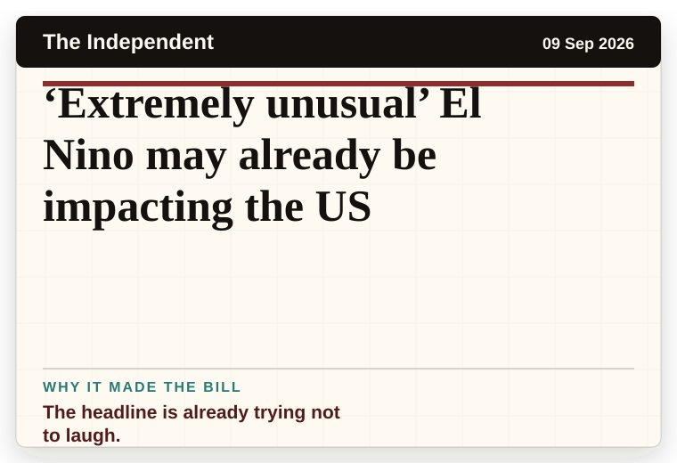
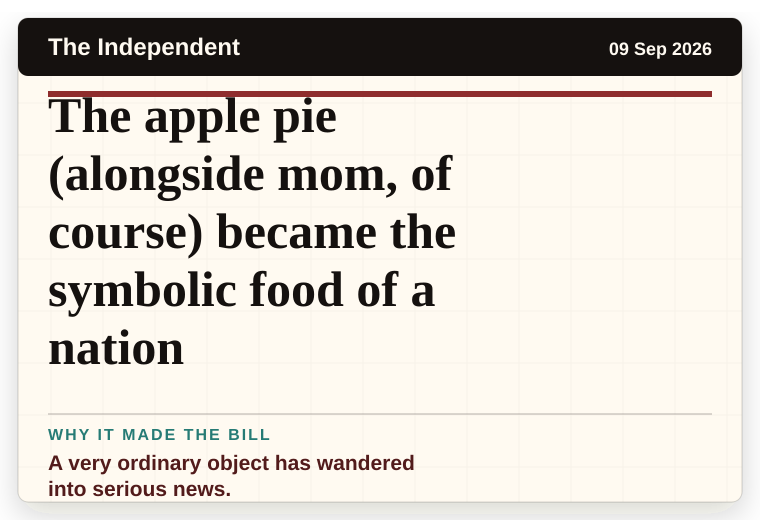
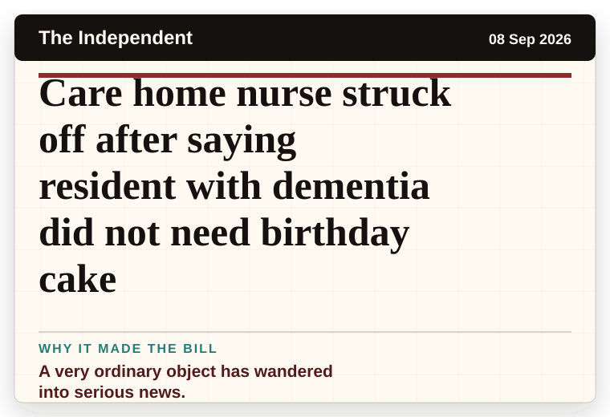
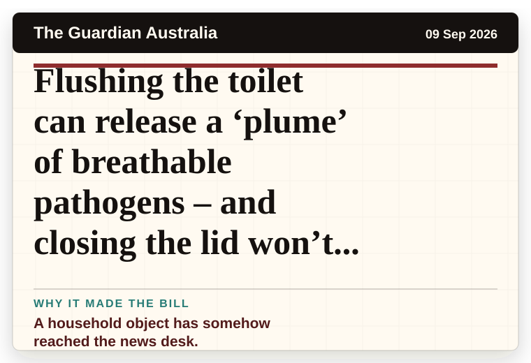
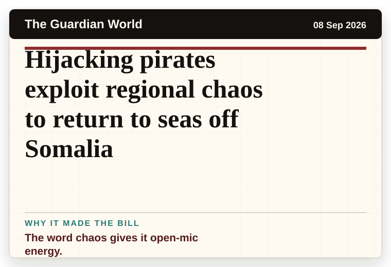
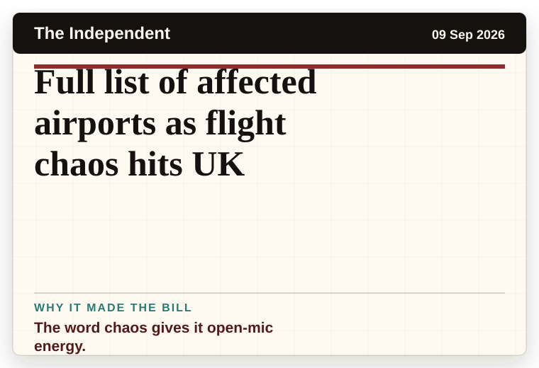
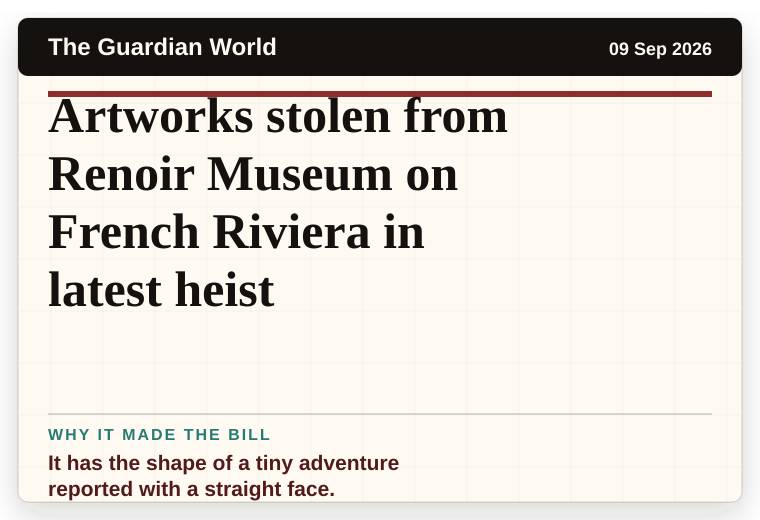
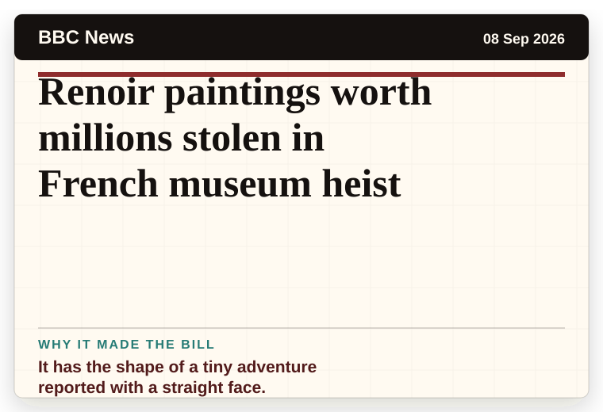

NT News
Australia
Demi Lovato enjoyed a ‘beautiful’ surprise reunion on the Camp Rock 3 set
It has the shape of a tiny adventure reported with a straight face.
The latest daily picks, linked back to the original sources. Search the room, pick a source, or follow a headline out to the full story.
Record updated: 09 Sep 2026, 07:39 AM AEST
Showing 18 headline candidates from the refresh run completed on 09 Sep 2026, 07:39 AM AEST.
It has the shape of a tiny adventure reported with a straight face.

The headline is already trying not to laugh.

A household object has somehow reached the news desk.

It has the shape of a tiny adventure reported with a straight face.

A mystery is doing a lot of work in a very small sentence.

A mystery is doing a lot of work in a very small sentence.

A wonderfully specific detail has taken centre stage.

It has the shape of a tiny adventure reported with a straight face.

The scale is doing deadpan comedy.

The headline is already trying not to laugh.

A very ordinary object has wandered into serious news.

A very ordinary object has wandered into serious news.

A household object has somehow reached the news desk.

The word chaos gives it open-mic energy.
The word chaos gives it open-mic energy.

The word chaos gives it open-mic energy.

It has the shape of a tiny adventure reported with a straight face.

It has the shape of a tiny adventure reported with a straight face.